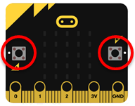
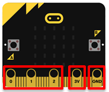
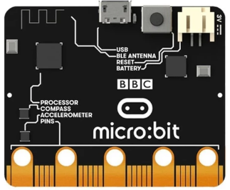
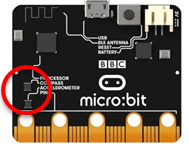
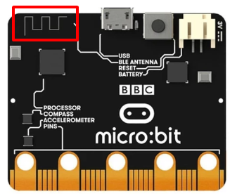
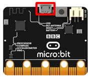

Micro:bit – Osnovne karakteristike i komponente¶
Pre nego što započnemo priču o programiranju Microbit-a preko MakeCode hajde da se upoznamo sa osnovnim komponentama i karakteristikama Micro:bita i radnim okruženjem.
Micro:bit – Osnovne karakteristike i komponente¶
Micro:bit je prenosivi, korisnički programabilni računar koji ima 32-bitni ARM Cortex-M0 procesor koji radi na 16MHz i ima samo 16KB RAM memorije, senzore i ekran koji čine 25 LED diode. Ima konektore, pet ulaza i izlaza (I/O) koji se koriste za povezivanje Micro:bit sa drugim uređajima ili senzorima, ima Bluetooth podršku, napaja se sa dve AA baterije. I ono što je najvažnije ima mogućnost programiranja.

Micro:bit se sastoji od sledećih fizičkih komponenti:
25 LED dioda koje se mogu pojedinačno programirati
2 tastera označena sa A i B koji se mogu programirati
pinovi
senzori za temperaturu i svetlo
senzori pokreta (merač ubrzanja i kompas)
bežična komunikacija preko radija i bluethoot
USB priključak
taster za resetovanje
LED diode

LED diode (Light Emitting Diode) su diode koje emituju svetlo. Micro:bit ima 25 LED dioda (smeštenih u mrežu 5x5) koje se mogu pojedinačno programirati i koje zavisno od programa mogu prikazivati određeni tekst, brojeve, figure.
Tasteri A i B
Na prednjoj strani Micro:bit nalaze se dva tastera (dugmeta) (označena A i B). Pojedinačnim pritiskom na svako dugme ili istovremenim pritiskom na oba dugmeta pokreće se program na uređaju.
Pinovi
Koriste se za povezivanje sa drugim uređajima ili senzorima.
Senzori za svetlo
LED diode se nalaze na prednjem delu Micro:bit. One u ovom slučaju igraju ulogu ulaznog uređaja. LED ekran radi kao običan senzor za svetlo koji detektuje intezitet svetlosti u okolini.
Senzor za temperaturu
{kind=link}
Senzor za temperaturu omogućava Micro:bit da detektuje trenutnu temperaturu u okolini, u stepenima Celzijusa.
Akcelerometar
Akcelerometar - merač ubrzanja je komponenta koja registruje pokrete tj. promenu u brzini i položaju, odnosno moguće je izmeriti brzinu kretanja. Pomoću ove komponente moguće je registrovati kada se Micro:bit pomeri. Takođe, moguće je detektovati i druge aktivnosti, na primer drhtanje, nagib ili slobodan pad.
Kompas
Kompas detektuje Zemljino magnetno polje, što nam daje mogućnost određivanja smera u kojem je okrenut Micro:bit. Kompas pre upotrebe treba da bude kalibrisan. „Kalibrisanjem“ kompasa daje precizne rezultate očitavanja smera. Kada započne kalibracija, Micro:bit će na ekranu prikazati uputstva – „Draw a circle“ („Nacrtaj krug“) ili „Tilt to fill screen“ („Nagni da ispuniš ekran“). Za kalibraciju kompasa treba pratiti data uputstva i naginjati Micro:bit u krug tako da pomeramo tačkicu u sredinu ekrana dok se ne ispiše obris kruga ili dok se ceo ekran ne ispuni tačkama.
Radio i Bluetooth
{kind=link}
Komponenta za radio omogućava bežično komuniciranje između dva ili više Micro:bit-ova. Radio možemo koristiti za slanje poruka drugim Micro:bit-ovima, u kreiranju igara ili kvizova za više igrača i slično. BLE (Bluetooth Low Energy) antena omogućava Micro:bit-u da šalje i prima Bluetooth signale, odnosno da bežično komunicira sa računarima, mobilnim telefonima i tabletima.
USB okruženje
USB ulaz omogućava da povežemo Micro:bit sa računarom preko mikro USB kabla, koji će napuniti uređaj i omogućiti da na njega preuzimamo programske kodove.
Radno okruzenje¶
Radno okruženje pokrećemo preko brauzera pokretanjem stranice https://makecode.microbit.org.
Nov projekat pokrećemo klikom na dugme New Project .
{kind=link}
Ovaj online editor daje mogućnost programiranja u JavaScript-u ili u grafičkom (blokovskom) programiranju gde se naredbe slažu tehnikom „drag and drop“. Mi ćemo se baviti blokovskim programiranjem.
Web okruženje micro:bita u Makecode editoru sa leve strane sadrži simulator (1) koji odmah nakon pisanja programa, isti izvršava, pa se kroz vizuelizaciju vrlo laku mogu uočiti i greške koje se mogu javiti u programu. U sredini okruženja postavljen je meni (2) u kome se nalaze grupisane naredbe. Sa desne strane nalazi se radna površina (3) na koju se prevlače naredbe i na kojoj se sklapaju programi.
Web okruženje micro:bita u Makecode editoru sa leve strane sadrži simulator (1) koji odmah nakon pisanja programa, isti izvršava, pa se kroz vizuelizaciju vrlo laku mogu uočiti i greške koje se mogu javiti u programu. U sredini okruženja postavljen je meni (2) u kome se nalaze grupisane naredbe. Sa desne strane nalazi se radna površina (3) na koju se prevlače naredbe i na kojoj se sklapaju programi.

Kada se pokrene novi projekat na radnoj površini MakeCode se nalaze dva bloka: on start i forever. Blok  je jedan od osnovnih blokova, i blokovi u okviru njega se izvršavaju samo jednom dok se program ne zvrši. Dok je blok
je jedan od osnovnih blokova, i blokovi u okviru njega se izvršavaju samo jednom dok se program ne zvrši. Dok je blok  blok u okviru koga će se naredbe izvršavati beskonačan broj puta. Njegovo izvršavanje nikada se ne prekida samostalno. Prekida se klikom na dugme za prestanak rada programa (Stop dugme
blok u okviru koga će se naredbe izvršavati beskonačan broj puta. Njegovo izvršavanje nikada se ne prekida samostalno. Prekida se klikom na dugme za prestanak rada programa (Stop dugme  ).
U MakeCode, programi su sačinjeni od različitih i međusobno povezanih blokova. Blokovi (naredbe) su podeljeni po kategorijama različitih namena.
).
U MakeCode, programi su sačinjeni od različitih i međusobno povezanih blokova. Blokovi (naredbe) su podeljeni po kategorijama različitih namena.
Ime kategorije (npr. Music) upućuje korisnika na vrste naredbi (blokova) koje se u toj kategoriji mogu naći. Svi blokovi jedne kategorije su iste boje.
Svaki blok prevlačimo na radnu površinu, a zatim se oni nadovezuju u zavisnosti od programa koji se izrađuje.
Kada se klikne desnim klikom miša na blok dobija se padajući kategoriju u kome se nalaze opcije za kreiranje duplikata (Duplicate), dodavanje komenatar (Add Comment), brisanje bloka (Delete Block) i opcije pomoću koje se otvara deo sa informacijama za dodatnu pomoć oko pojedinih blokova (Help).
Pre nego što započnemo kreiranje zanimljivih projekata korišćenjem Micro:bit-a pokušaćemo da se upoznamo sa osnovama programiranja u radnom okruženju MakeCode.
Projekti¶
U narednim tutorijalima upoznaćemo se sa zanimljivim projektima vezanim za programiranje Micro:bit-a na platformi MakeCode. Svi projekti su urađeni postupno – korak po korak tako da ih svako može ponovo uraditi. Opisani su svi postupci izrade projekta, od načina pravljenja uređaja do izrade programa i njegovog testiranja.